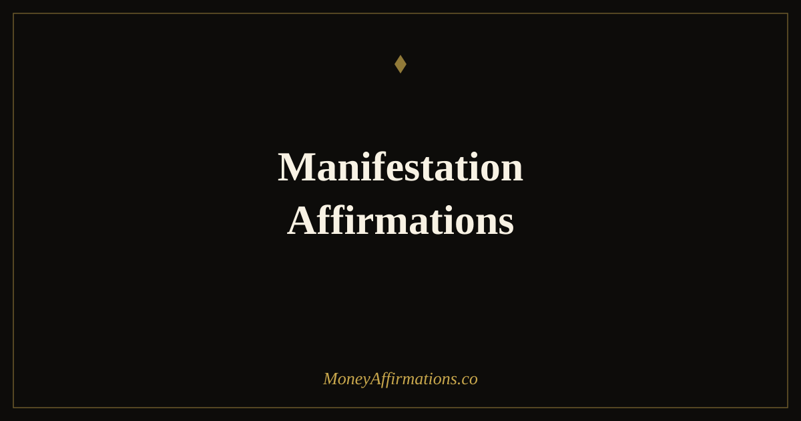

Manifestation Affirmations: 30 Statements to Attract Your Goals

Manifestation is not about wanting something hard enough. It is about removing the psychological friction between where you are and where you are trying to go. That friction is almost always a belief — a quiet, running conviction that what you want is not really available to you, that you are not quite the person who gets those outcomes, or that something will intervene before you arrive. Those beliefs do not announce themselves. They show up as hesitation, procrastination, self-sabotage, and a persistent feeling that effort alone should be enough but somehow never quite is.
Manifestation affirmations work by introducing a competing belief — one that is aligned with the outcome rather than opposed to it. These 30 statements are designed to shift your internal orientation from uncertain striving to confident expectancy. They do not replace the work. They change the quality of the person doing it: more focused, less fearful, more willing to act on what arrives, and more capable of sustaining effort through the stages that require patience.
What are manifestation affirmations?
Manifestation affirmations are present-tense statements that align your current identity and beliefs with the reality you are in the process of creating. They differ from general positive affirmations in that they are specifically oriented toward an intended outcome — they are not just about feeling good but about removing the internal resistance that stands between your current state and your stated goal.
They work most effectively as a combination of identity statement and intention: who you are becoming, paired with what that person does and receives. This combination is what makes them more than positive thinking — they are psychological rehearsal for a version of yourself that behaves, decides, and notices the world differently than the version currently running the programme. For a full exploration of how manifestation works in practice, the manifestation affirmations collection provides the broader context.
30 manifestation affirmations
- I am a powerful creator and my financial goals are already taking shape.
- What I focus on with clarity and intention moves steadily toward me.
- I am in the process of manifesting a life that exceeds my current expectations.
- My beliefs, actions, and attention are fully aligned with the abundance I am creating.
- I trust the process of manifestation and I do my part with consistent, focused effort.
- The life I want is available to me and I am actively closing the distance.
- I attract what I am ready for, and I prepare myself to be ready for more.
- My goals are clear, my belief is strong, and my path is opening before me.
- I manifest through aligned action, not through passive wishing.
- Every day I take at least one step that moves me closer to what I am creating.
- I am the kind of person who follows through, stays the course, and receives the result.
- My mind is trained on what is possible, not distracted by what seems unlikely.
- I release doubt and return to the certainty that I am building something real.
- The right people, resources, and opportunities are already moving into my life.
- I am worthy of everything I am working toward, and I receive it without guilt.
- My imagination is not wishful thinking — it is a preview of what I am making real.
- I notice opportunities that match my goals because I am looking for them intentionally.
- My financial goals are achieved through clarity, courage, and consistent action.
- I hold my vision clearly and I act as if its arrival is a matter of when, not if.
- I release the need to control every detail and trust that aligned effort produces results.
- My life is a direct reflection of what I believe is possible for me — and I keep expanding that.
- I manifest abundance not just in money but in opportunity, connection, and clarity.
- Every obstacle I encounter is a redirection toward a better version of my goal.
- I am patient with timing while remaining fully committed to outcome.
- What I consistently affirm, believe, and act upon becomes my reality.
- I am already the version of myself who has achieved the goals I am working toward.
- Manifestation requires me to be ready to receive — and I practise that readiness daily.
- I invest my energy in what I want, not in narrating what I fear.
- My goals are not fantasies — they are commitments I am keeping with myself.
- I live, think, and decide as someone who expects good things and receives them regularly.
How to use these affirmations
Manifestation affirmations work best when they are anchored to a specific, written goal. Before your practice, write your current most important goal in one sentence: a financial target, a life change, a business milestone. Read it once. Then go through five affirmations from the list, choosing those that most directly address the belief gap between your current reality and that goal. The connection between the affirmation and the goal is what creates directed rather than diffuse change.
Use an evening practice as a complement. Each night, note one thing that happened today that was consistent with your goal — an aligned action you took, an opportunity you noticed, a feeling of capability rather than doubt. This completion ritual is what converts affirmation from a morning exercise into a full-day orientation. When the brain knows it will need to report evidence at the end of the day, it actively searches for it throughout the day — which is how attention management becomes the mechanism of manifestation. Pair this with manifesting affirmations for money for a money-specific version of this practice.
The reticular activating system: the neuroscience of manifestation
The reticular activating system (RAS) is a small cluster of neurons in the brainstem responsible for filtering the approximately eleven million bits of sensory information your brain receives every second. Of those, you consciously perceive roughly forty. The RAS decides which forty — and it makes that selection based on what you have told it is important. When you consistently hold a goal in mind and affirm your alignment with it, you are programming the RAS to prioritise relevant information: the job listing that matches your ambition, the client who needs exactly what you offer, the conversation that opens a financial door.
This is not metaphysics — it is a well-documented function of attention management. Research on goal-setting confirms that people who hold clear, specific goals notice relevant opportunities at a significantly higher rate than those who hold vague intentions. Manifestation affirmations work, in neuroscientific terms, as a daily recalibration of RAS priorities. Every time you affirm "I notice opportunities that match my goals because I am looking for them intentionally," you are literally instructing your attention filter to scan for and surface that information. The affirmation is not creating the opportunity — it is ensuring you do not walk past it.
Tips to make them work faster
- Write your goal before your affirmations. The act of writing your goal activates goal-related neural networks, making the affirmations that follow more precisely targeted.
- Choose affirmations that stretch without breaking. The sweet spot is a belief you can almost hold — not one you currently hold comfortably, and not one that feels completely implausible. That slight stretch is where change happens.
- Pair belief with same-day action. After affirmations, identify one action aligned with your goal. The action provides the evidence that cements the belief.
- Review evidence weekly. Each week, list three things that moved in the direction of your goal. Evidence compounds. The more you document, the stronger the belief that something is genuinely happening.
- Notice and name resistance. When an affirmation creates discomfort, write down what your mind says in response. That objection is the specific belief you are working to change — naming it explicitly is part of the process.
Frequently Asked Questions
Is manifestation real or is it just wishful thinking?
The core of what manifestation describes — that belief shapes attention, attention shapes behaviour, and behaviour shapes outcomes — is well-supported by psychology. The reticular activating system, expectancy theory, and self-fulfilling prophecy research all point to the same mechanism. Where manifestation gets misrepresented is in the suggestion that belief alone produces results without action. The more accurate picture is that aligned belief removes the psychological barriers to effective action, making consistent effort more possible and more directed.
How often should I use manifestation affirmations?
Daily practice in the morning, with five to seven affirmations said slowly and with genuine feeling, is more effective than longer sessions done irregularly. Consistency matters more than duration. Two minutes every morning for thirty days produces more change than a forty-minute session once a week. The goal is to make the new belief pattern a habitual first-response rather than an occasional conscious effort.
Why do some people feel worse after using manifestation affirmations?
This usually happens when there is a large gap between the affirmation and the person's current belief, creating cognitive dissonance rather than hope. The solution is to choose affirmations that stretch without straining: statements that feel possible and directionally true, even if not yet fully real. Beginning with bridge statements ("I am in the process of manifesting...") is more effective than jumping to claims that feel completely implausible, and then moving to bolder statements as the belief builds.
For a full collection of statements aligned with the practice of intentional creation, explore the manifestation affirmations collection and build a daily ritual that keeps your mindset as focused and aligned as the goals you are pursuing.